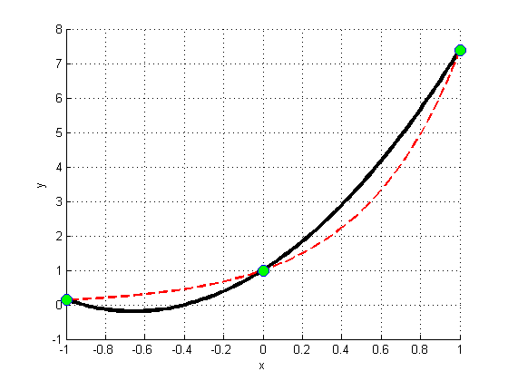
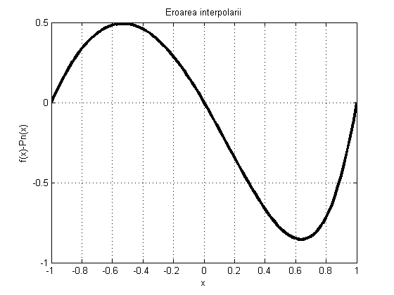
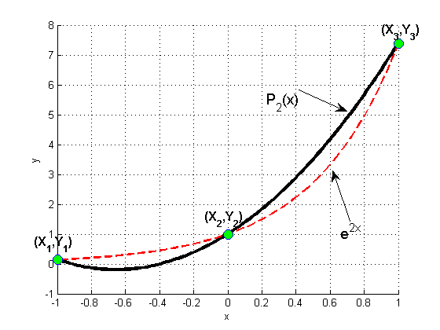

Contents
function Program_IV_1
f=inline('exp(2*x)','x');
x0=-1; xf=1; N=2;
X=linspace(x0,xf,(N+1));
Y=f(X);
x=linspace(x0,xf,100);
for ind=1:length(x)
PN(ind)=MetNDD(X,Y,x(ind));
end
figure(1)
hold on
plot(x,PN,'k','Linewidth',3);
xlabel('x')
ylabel('y')
grid on
plot(x,f(x),'--r','Linewidth',2);
plot(X,f(X),'o','MarkerFaceColor','g','MarkerSize',10)
hold off
figure(2)
plot(x,f(x)-PN,'k','Linewidth',3)
title('Eroarea interpolarii')
xlabel('x')
ylabel('f(x)-Pn(x)')
grid on
openfig('Fig1.fig');
  
Metoda Newton cu diferente divizate
function y = MetNDD(X,Y,x)
n = length(X)- 1;
for i = 1:n+1
Q(i,1) = Y(i);
end
for i = 2:n+1
for j=2:i
Q(i,j) =(Q(i,j-1)-Q(i-1,j-1))/(X(i) - X(i-j+1));
end
end
Pn = Q(1,1);
for k = 2:n+1
p = 1;
for j = 1:k-1
p = p * (x-X(j));
end
Pn = Pn + Q(k,k) * p;
end
y=Pn;
end
end